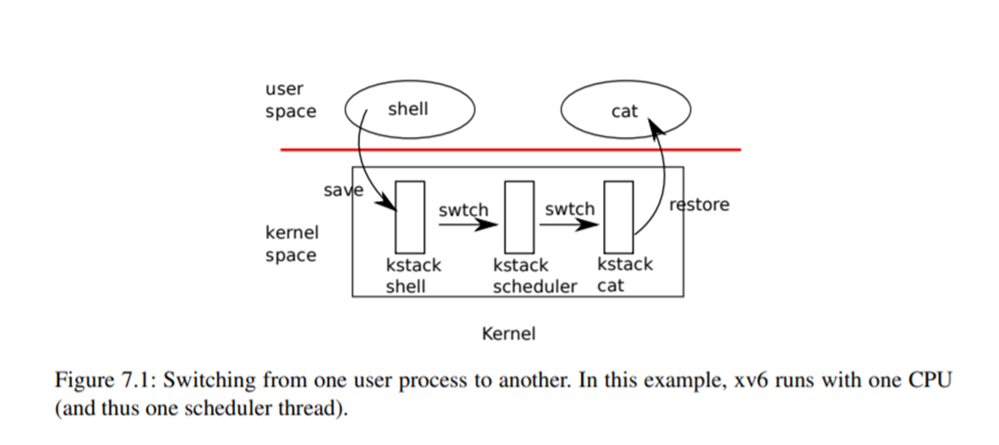

Chapter 7
第七章：调度¶
任何操作系统运行的进程数量都可能超过计算机的CPU数量，因此需要制定一个方案，在各进程之间分时共享CPU。理想情况下，这种共享对用户进程是透明的。一种常见的方法是通过将进程复用到硬件CPU上，给每个进程提供它有自己的虚拟CPU的假象。本章解释xv6如何实现这种复用。
7.1 Multiplexing¶
xv6通过在两种情况下将CPU从一个进程切换到另一个进程来实现复用。首先，xv6的**sleep**和**wakeup**机制会进行切换，这会发生在进程等待设备或管道I/O，或等待子进程退出，或在**sleep**系统调用中等待。其次，xv6周期性地强制切换，以应对长时间不进行sleep操作的计算进程。这种复用造成了每个进程都有自己的CPU的假象，就像xv6使用内存分配器和硬件页表造成每个进程都有自己的内存的假象一样。
实现复用会有一些挑战。首先，如何从一个进程切换到另一个进程？虽然上下文切换的想法很简单，但在XV6的实现中上下文切换却是最不透明的代码之一。第二，如何以对用户进程透明的方式进行强制切换？xv6采用标准通用的方式，用定时器中断来驱动上下文切换。第三，许多CPU可能会在进程间并发切换，需要设计一个锁来避免竞争。第四，当进程退出时，必须释放进程的内存和其他资源，但进程本身不能完全释放掉所有的资源，比如它不能在使用内核栈的同时释放自己的内核栈。第五，多核机器的每个内核必须记住它正在执行的进程，这样系统调用才能修改相应进程的内核状态。最后，**sleep**和**wakeup**允许一个进程放弃CPU，并睡眠等待某一事件，并允许另一个进程将睡眠的进程唤醒。需要注意一些竞争可能会使唤醒丢失。Xv6试图尽可能简单地解决这些问题，尽管如此，实际代码还是很棘手。
7.2 Code: Context switching¶

图7.1概述了从一个用户进程切换到另一个用户进程所涉及的步骤：用户-内核的切换（通过系统调用或中断）到旧进程的内核线程，上下文（context）切换到当前CPU的调度器线程，上下文（context）切换到新进程的内核线程，以及trap返回到用户级进程。xv6调度器在每个CPU上有一个专门的线程(保存了寄存器和栈)，因为调度器在旧进程的内核栈上执行是不安全的：因为其他核心可能会唤醒该进程并运行它，而在两个不同的核心上使用相同的栈将是一场灾难。在本节中，我们将研究在内核线程和调度线程之间切换的机制。
从一个线程切换到另一个线程，需要保存旧线程的CPU寄存器，并恢复新线程之前保存的寄存器；栈指针和pc被保存和恢复，意味着CPU将切换栈和正在执行的代码。
函数**swtch**执行内核线程切换的保存和恢复。swtch**并不直接知道线程，它只是保存和恢复寄存器组，称为***上下文(context)*。当一个进程要放弃CPU的时候，进程的内核线程会调用**swtch**保存自己的上下文并返回到调度器上下文。每个上下文都包含在一个结构体 context(kernel/proc.h:2)**中，它本身包含在进程的结构体**proc**或CPU的结构体**cpu**中。**Swtch**有两个参数：**struct context old**和**struct context new。它将当前的寄存器保存在old中，从new中加载寄存器，然后返回。
让我们跟随一个进程通过**swtch**进入**scheduler**。我们在第4章看到，在中断结束时，有一种情况是**usertrap**调用**yield**。yield**又调用**sched，**sched**调用**swtch**将当前上下文保存在**p->context**中，并切换到之前保存在**cpu->scheduler**中的调度器上下文（kernel/proc.c:509）。
**Swtch(kernel/swtch.S:3)**只保存callee-saved寄存器，caller-saved寄存器由调用的C代码保存在堆栈上(如果需要)。**Swtch**知道**struct context**中每个寄存器字段的偏移量。它不保存pc。相反，**swtch**保存了ra寄存器[1]，它保存了**swtch**应该返回的地址。现在，**swtch**从新的上下文中恢复寄存器，新的上下文中保存着前一次**swtch**所保存的寄存器值。当**swtch**返回时，它返回到被恢复的ra寄存器所指向的指令，也就是新线程之前调用**swtch**的指令。此外，它还会返回新线程的堆栈。
在我们的例子中，sched**调用**swtch**切换到**cpu->scheduler，即CPU调度器的上下文。这个上下文已经被**scheduler**对**swtch**的调用所保存(kernel/proc.c:475)。当我们跟踪的**swtch**返回时，它不是返回到**sched**而是返回到**scheduler**，它的栈指针指向当前CPU的调度器栈。
补充说明（不在翻译内容中）：
根据XV6的源代码，xv6中只有两处调用switch：
c
void
sched(void)
{
// ...
swtch(&p->context, &mycpu()->scheduler);
// ...
}
``` c void scheduler(void) { // ... swtch(&c->scheduler, &p->context); // ... }
上面的实现是代价很大。如果生产者很少生产，消费者将把大部分时间花在while循环中，希望得到一个非零的计数。消费者的CPU可以通过反复***轮询(polling)*** **s->count**可以找到比***忙碌等待(busy waiting)***更有效的工作。避免***忙碌等待***需要一种方法，让消费者让出CPU，只有在**V**增加计数后才恢复。
这里是朝着这个方向迈出的一步，虽然他不能完全解决这个问题。让我们想象一对调用，sleep**和**wakeup，其工作原理如下。Sleep(chan)**睡眠**chan**上，**chan**可以为任意值，称为***等待通道(wait channel)*。Sleep**使调用进程进入睡眠状态，释放CPU进行其他工作。**Wakeup(chan)**唤醒所有在**chan**上**sleep**的进程（如果有的话），使它们的**sleep**调用返回。如果没有进程在**chan**上等待，则**wakeup**不做任何事情。我们修改信号量实现，以使用**sleep**和**wakeup（修改处用注释标注）。
| C | |
|---|---|
P现在放弃CPU而不是自旋，这是一个不错的改进。然而，事实证明，像这样设计**sleep**和**wakeup**并不是一件容易的事，因为它会遇到所谓的丢失唤醒问题。假设执行P 的**s->count == 0**这一行时。当P在**sleep**之前，V在另一个CPU上运行：它将**s->count**改为非零，并调用**wakeup**，wakeup**发现没有进程在睡眠，因此什么也不做。现在P继续执行：它调用**sleep**并进入睡眠状态。这就造成了一个问题：P正在**sleep，等待一个已经发生的V调用。除非我们运气好，生产者再次调用V，否则消费者将永远等待，即使计数是非零。
这个问题的根源在于，在错误的时刻运行的V违反了P只在s->count==0时休眠的不变量。保护这个不变量的一个不正确的方法是将锁获取（修改用注释标注）移动到P中，这样它对计数的检查和对sleep的调用是原子的：
| C | |
|---|---|
人们可能希望这个版本的P能够避免丢失的唤醒，因为锁会阻止V在**s->count == 0**和sleep之间执行。它做到了这一点，但它也会死锁。P在**sleep**时保持着锁，所以V将永远阻塞在等待锁的过程中。
我们将通过改变**sleep**的接口来修正前面的方案：调用者必须将***条件锁(condition lock)***传递给**sleep**，这样在调用进程被标记为***SLEEPING***并在chan上等待后，它就可以释放锁。锁将强制并发的V等待直到P将自己置于***SLEEPING***状态，这样**wakeup**就会发现***SLEEPING***的消费者并将其唤醒。一旦消费者再次被唤醒，**sleep**就会重新获得锁，然后再返回。我们新的正确的睡眠/唤醒方案是可用的，如下所示（修改用注释标注）。
| C | |
|---|---|
P持有**s->lock**会阻止了V在P检查**c->count**和调用**sleep**之间试图唤醒它。但是，请注意，我们需要**sleep**来原子地释放**s->lock**并使消费者进程进入***SLEEPING***状态。
7.6 Code: Sleep and wakeup¶
让我们看看**sleep (kernel/proc.c:548)** 和 wakeup (kernel/proc.c:582) 的实现。其基本思想是让**sleep**将当前进程标记为**SLEEPING**，然后调用**sched**让出**CPU**；wakeup**则寻找给定的***等待通道***上睡眠的进程，并将其标记为**RUNNABLE。sleep**和**wakeup**的调用者可以使用任何方便的数字作为**channel。Xv6经常使用参与等待的内核数据结构的地址。
Sleep**首先获取**p->lock (kernel/proc.c:559)。现在进入睡眠状态的进程同时持有**p->lock**和**lk**。在调用者(在本例中为P)中，持有**lk**是必要的：它保证了没有其他进程(在本例中，运行V的进程)可以调用**wakeup(chan)。现在**sleep**持有**p->lock，释放**lk**是安全的：其他进程可能会调用**wakeup(chan)，但**wakeup**会等待获得**p->lock，因此会等到**sleep**将进程状态设置为**SLEEPING**，使**wakeup**不会错过**sleep**的进程。
有一个复杂情况：如果**lk**和**p->lock**是同一个锁，如果**sleep**仍试图获取**p->lock**，就会和自己死锁。但是如果调用**sleep**的进程已经持有**p->lock**，那么它就不需要再做任何事情来避免错过一个并发的**wakeup**。这样的情况发生在，**wait (kernel/proc.c:582)**调用**sleep**并持有**p->lock**时。
现在**sleep**持有**p->lock**，而没有其他的锁，它可以通过记录它睡眠的**channel**，将进程状态设置**SLEEPING**，并调用**sched**(kernel/proc.c:564-567)来使进程进入睡眠状态。稍后我们就会明白为什么在进程被标记为**SLEEPING**之前，**p->lock**不会被释放（由调度器）。
在某些时候，一个进程将获取条件锁，设置睡眠等待的条件，并调用**wakeup(chan)。重要的是，**wakeup**是在持有条件锁[2]的情况下被调用的。**Wakeup**循环浏览进程表（kernel/proc.c:582）。它获取每个被检查的进程的**p->lock，因为它可能会修改该进程的状态，也因为**p->sleep**确保**sleep**和**wakeup**不会相互错过。当**wakeup**发现一个进程处于状态为**SLEEPING**并有一个匹配的**chan**时，它就会将该进程的状态改为**RUNNABLE**。下一次调度器运行时，就会看到这个进程已经准备好运行了。
为什么**sleep**和**wakeup**的锁规则能保证睡眠的进程不会错过**wakeup**？**sleep**进程从检查条件之前到标记为**SLEEPING**之后的这段时间里，持有条件锁或它自己的**p->lock**或两者都持有。调用**wakeup**的进程在**wakeup**的循环中持有这两个锁。因此，唤醒者要么在消费者检查条件之前使条件为真；要么唤醒者的**wakeup**在消费者被标记为**SLEEPING**之后检查它。 无论怎样，**wakeup**就会看到这个睡眠的进程，并将其唤醒（除非有其他事情先将其唤醒）。
有时会出现多个进程在同一个**channel**上睡眠的情况；例如，有多个进程从管道中读取数据。调用一次**wakeup**就会把它们全部唤醒。其中一个进程将首先运行，并获得**sleep**参数传递的锁，（就管道而言）读取数据都会在管道中等待。其他进程会发现，尽管被唤醒了，但没有数据可读。从他们的角度来看，唤醒是“虚假的“，他们必须再次睡眠。出于这个原因，**sleep**总是在一个检查条件的循环中被调用。
如果两次使用**sleep/wakeup**不小心选择了同一个通道，也不会有害：它们会看到虚假的唤醒，上面提到的循环允许发生这种情况。sleep/**wakeup**的魅力很大程度上在于它既是轻量级的（不需要创建特殊的数据结构来充当睡眠通道），又提供了一层间接性（调用者不需要知道他们正在与哪个具体的进程交互）。
7.7 Code: Pipes¶
一个使用**sleep**和**wakeup**来同步生产者和消费者的更复杂的例子是xv6的管道实现。我们在第1章看到了管道的接口：写入管道一端的字节被复制到内核缓冲区，然后可以从管道的另一端读取。未来的章节将研究管道如何支持文件描述符，但我们现在来看一下**pipewrite**和**piperead**的实现吧。
每个管道由一个结构体 pipe**表示，它包含一个锁和一个数据缓冲区。**nread**和**nwrite**两个字段统计从缓冲区读取和写入的字节总数。缓冲区呈环形：**buf[PIPESIZE-1]**之后写入的下一个字节是**buf[0]。计数不呈环形。这个约定使得实现可以区分满缓冲区(nwrite == nread+PIPESIZE)和空缓冲区(nwrite == nread)，但这意味着对缓冲区的索引必须使用**buf[nread % PIPESIZE]，而不是使用**buf[nread](**nwrite**也是如此)。
假设对**piperead**和**pipewrite**的调用同时发生在两个不同的CPU上。Pipewrite (kernel/pipe.c:77)**首先获取管道的锁，它保护了计数、数据和相关的不变式。然后，**Piperead (kernel/pipe.c:103)**也试图获取这个锁，但是不会获取成功。它在**acquire(kernel/spinlock.c:22)**中循环，等待锁的到来。当**piperead**等待时，**pipewrite**会循环写，依次将每个字节添加到管道中(kernel/pipe.c:95)。在这个循环中，可能会发生缓冲区被填满的情况(kernel/pipe.c:85)。在这种情况下，**pipewrite**调用**wakeup**来提醒所有睡眠中的reader有数据在缓冲区中等待，然后在&pi->nwrite**上**sleep**，等待reader从缓冲区中取出一些字节。Sleep**函数内会释放**pi->lock，然后**pipwrite**进程睡眠。
现在**pi->lock**可用了，piperead**设法获取它并进入它的临界区：它发现**pi->nread != pi->nwrite (kernel/pipe.c:110) (pipewrite**进入睡眠状态是由于**pi->nwrite == pi->nread+PIPESIZE (kernel/pipe.c:85))，所以它进入for循环，将数据从管道中复制出来**(kernel/pipe.c:117)，并按复制的字节数增加**nread。现在又可写了，所以 piperead 在返回之前调用 wakeup (kernel/pipe.c:124) 来唤醒在睡眠的writer。Wakeup**找到一个在&pi->nwrite**上睡眠的进程，这个进程正在运行**pipewrite**，但在缓冲区填满时停止了。它将该进程标记为**RUNNABLE**。
管道代码对reader和writer分别使用不同的睡眠**channel**（pi->nread**和**pi->nwrite）；这可能会使系统在有多个reader和writer等待同一个管道的情况下更有效率。管道代码在循环内sleep，检查sleep条件；如果有多个reader 和 writer，除了第一个被唤醒的进程外，其他进程都会看到条件仍然是假的，然后再次睡眠。
7.8 Code: Wait, exit, and kill¶
sleep**和**wakeup**可以用于许多种需要等待的情况。在第1章中介绍的一个有趣的例子是，一个子进程的**exit**和其父进程的**wait**之间的交互。在子进程退出的时候，父进程可能已经在**wait**中睡眠了，也可能在做别的事情；在后一种情况下，后续的**wait**调用必须观察子进程的退出，也许是在它调用**exit**之后很久。xv6在**wait**观察到子进程退出之前，记录子进程退出的方式是让**exit**将调用进程设置为**ZOMBIE**状态，在那里停留，直到父进程的**wait**注意到它，将子进程的状态改为**UNUSED，然后复制子进程的退出状态，并将子进程的进程ID返回给父进程。如果父进程比子进程先退出，父进程就把子进程交给**init**进程，而**init**进程则循环的调用**wait**；这样每个子进程都有一个“父进程”来清理。主要的实现挑战是父进程和子进程的**wait**和**exit**，以及**exit**和**exit**之间可能出现竞争和死锁的情况。
Wait**使用*调用进程* 的**p->lock**作为条件锁，以避免唤醒丢失，它在开始时获取该锁（kernel/proc.c:398）。然后它扫描进程表。如果它发现一个处于**ZOMBIE**状态的子进程，它释放这个子进程的资源和它的**proc**结构，将子进程的退出状态复制到提供给**wait**的地址(如果它不是0)，并返回子进程的ID。如果**wait**找到了子进程但没有一个退出，它调用**sleep**等待其中一个子进程退出(kernel/proc.c:445)，然后再次扫描。这里，在**sleep**中释放的条件锁是等待进程的**p->lock，也就是上面提到的特殊情况。请注意，**wait**经常持有两个锁；它在试图获取任何子锁之前，会先获取自己的锁；因此xv6的所有锁都必须遵守相同的锁顺序（父进程的锁，然后是子进程的锁），以避免死锁。
Wait**会查看每个进程的**np->parent**来寻找它的子进程。它使用 **np->parent 而不持有 np->lock，这违反了共享变量必须受锁保护的通常规则。但是**np**有可能是当前进程的祖先，在这种情况下，获取**np->lock**可能会导致死锁，因为这违反了上面提到的顺序。在这种情况下，在没有锁的情况下检查**np->parent**似乎是安全的；一个进程的父进程字段只有“父亲“改变，所以如果**np->parent==p**为真，除非当前进程改变它，否则该值就不会改变。
Exit (kernel/proc.c:333)**记录退出状态，释放一些资源，将所有子进程交给**init**进程，在父进程处于等待状态时唤醒它，将*调用进程*标记为**zombie，并永久放弃CPU。最后的序列有点棘手。退出的进程必须持有父进程的锁，同时将自己状态设置为**ZOMBIE**并唤醒父进程，因为父进程的锁是条件锁，可以防止在等待中丢失**wakeup**。子进程也必须持有自己的**p->lock**，否则父进程可能会看到它的状态为**ZOMBIE**，并在它还在运行时释放它。锁的获取顺序对避免死锁很重要：因为**wait**在子锁之前获取父锁，所以**exit**必须使用相同的顺序。
Exit 调用了一个专门的唤醒函数 wakeup1，它只唤醒父函数，而且只有父进程在**wait**中睡眠的情况下才会去唤醒它**(kernel/proc.c:598)。在将自己的状态设置为**ZOMBIE**之前，唤醒父进程可能看起来并不正确，但这是安全的：尽管**wakeup1**可能会导致父进程运行，但**wait**中的循环不能检查子进程，直到子进程的**p->lock**被调度器释放为止，所以**wait**不能查看退出的进程，直到**exit**将其状态设置为**ZOMBIE**之后(kernel/proc.c:386)**。
exit**允许一个进程自行终止，而**kill（kernel/proc.c:611）**则允许一个进程请求另一个进程终止。如果让**kill**直接摧毁进程，那就太复杂了，因为相应进程可能在另一个CPU上执行，也许正处于更新内核数据结构的敏感序列中。因此，kill的作用很小：它只是设置进程的**p->killed，如果它在**sleep**，则**wakeup**它。最终，进程会进入或离开内核，这时如果**p->killed**被设置，usertrap**中的代码会调用**exit。如果进程在用户空间运行，它将很快通过进行系统调用或因为定时器（或其他设备）中断而进入内核。
如果进程处于睡眠状态，kill**调用**wakeup**会使进程从睡眠中返回。这是潜在的危险，因为正在等待的条件可能不为真。然而，xv6对**sleep**的调用总是被包裹在一个**while**循环中，在**sleep**返回后重新检测条件。一些对**sleep**的调用也会在循环中检测**p->killed，如果设置了**p->killed**，则离开当前活动。只有当这种离开是正确的时候才会这样做。例如，管道读写代码如果设置了**killed**标志就会返回；最终代码会返回到**trap**，**trap**会再次检查标志并退出。
一些xv6 sleep**循环没有检查**p->killed，因为代码处于多步骤系统调用的中间，而这个调用应该是原子的。virtio驱动**(kernel/virtio_disk.c:242)就是一个例子：它没有检查**p->killed，因为磁盘操作可能是一系列写操作中的一个，而这些写操作都是为了让文件系统处于一个正确的状态而需要的。一个在等待磁盘I/O时被杀死的进程不会退出，直到它完成当前的系统调用和**usertrap**看到**killed**的标志。
7.9 Real world¶
xv6 调度器实现了一个简单的调度策略，它依次运行每个进程。这种策略被称为***轮询调度(round robin)。真正的操作系统实现了更复杂的策略，例如，允许进程有优先级。这个策略是，一个可运行的高优先级进程将被调度器优先于一个可运行的低优先级进程。这些策略可能会很快变得复杂，因为经常有相互竞争的目标：例如，操作者可能还想保证公平性和高吞吐量。此外，复杂的策略可能会导致不尽人意的交互，如***优先级倒置(priority inversion)***和***护航现象(convoys)。当低优先级和高优先级进程共享一个锁时，就会发生优先级倒置，当低优先级进程获得锁时，就会阻止高优先级进程的进展。当许多高优先级进程都在等待一个获得共享锁的低优先级进程时，就会形成一个长长的等待进程的车队；一旦护航现象形成，就会持续很长时间。为了避免这类问题，在复杂的调度器中需要额外的机制。
sleep**和**wakeup**是一种简单有效的同步方法，但还有很多其他的方法。在所有这些方法中，第一个挑战是避免我们在本章开头看到的丢失唤醒问题。最初的Unix内核的**sleep**只是禁用了中断，这已经足够了，因为Unix运行在单CPU系统上。因为xv6运行在多处理器上，所以它增加了一个显式的**sleep**锁。FreeBSD 的 **msleep 采用了同样的方法。Plan 9的**sleep**使用了一个回调函数，它在进入睡眠前保持调度锁的情况下运行；这个函数的作用是在最后一刻检查**sleep**情况，以避免**wakeup**丢失。Linux内核的**sleep**使用一个显式的进程队列，称为等待队列，而不是等待通道；队列有自己的内部锁。
在**wakeup**过程中扫描整个进程链表，寻找相匹配的**chan**的进程，效率很低。一个更好的解决方案是用一个数据结构代替**sleep**和**wakeup**中的**chan**，该结构上存放着**sleep**的进程列表，比如Linux的等待队列。Plan 9的**sleep**和**wakeup**将该结构称为rendezvous point或Rendez。许多线程库将同一个结构称为条件变量；在这种情况下，sleep和wakeup的操作被称为**wait**和**signal**。所有这些机制都有相同的机制：睡眠条件被睡眠过程中原子地释放的锁保护。
wakeup**唤醒了所有在某个特定**channel**上等待的进程，可能很多进程都在等待这个特定**channel。操作系统会调度所有这些进程，它们会争相检查睡眠条件。以这种方式行事的进程有时被称为***惊群效应（thundering herd）***，最好避免这种情况。大多数条件变量都有两个唤醒的基元：信号（signal），唤醒一个进程；广播（broadcast），唤醒所有等待的进程。
信号量通常用于同步。count通常对应于类似于管道缓冲区中可用的字节数或一个进程拥有的僵尸子进程的数量。使用显式计数作为抽象的一部分，可以避免丢失**wakeup**的问题：有一个显式的计数，说明已经发生的唤醒次数。该计数还避免了“虚假的”唤醒和***惊群效应***问题。
终止进程和清理进程在xv6中引入了很多复杂性。在大多数操作系统中，它甚至更加复杂，因为，假设被杀进程可能**trap**在内核中睡眠，而解除它的堆栈需要很多仔细的编程。许多操作系统使用显式的异常处理机制来解除堆栈，比如**longjmp**[3]。此外，还有其他一些事件可以导致一个睡眠进程被唤醒，即使它正在等待的事件还没有发生。例如，当一个Unix进程处于睡眠状态时，另一个进程可能会向它发送一个**signal**。在这种情况下，该进程将从中断的系统调用中返回，返回值为-1，错误代码设置为**EINTR**。应用程序可以检查这些值并决定做什么。Xv6不支持信号，也就不会出现这种复杂性。
Xv6对**kill**的支持并不完全令人满意：有些**sleep**循环可能应该检查**p->killed**。一个相关的问题是，即使是检查**p->killed**的**sleep**循环，在**sleep**和**kill**之间也会有一个竞争；kill**可能会设置**p->killed，并试图唤醒被杀进程，唤醒时刻发生在循环检查**p->killed**之后， 但在它调用**sleep**之前，就会发生。如果这个问题发生了，被杀进程不会注意到**p->killed**，直到它所等待的条件发生。这可能会晚很多（例如，当virtio驱动返回一个被杀进程正在等待的磁盘块时），也可能永远不会发生（例如，如果被杀进程正在等待来自控制台的输入，但用户没有键入任何输入）。
真正的操作系统会在常数时间内用显式的空闲列表来寻找空闲的进程，而不是在allocproc中进行线性时间的搜索；xv6为了简单起见，使用了线性扫描的方式。
7.10 Exercises¶
- Sleep必须检查lk != & p->lock以避免死锁**(kernel/proc.c:558-561)**。假设一种特殊情况通过将
替换为：
这样会破坏sleep吗，怎样破坏。
-
大部分进程退出时，资源清理可以通过**exit**或**wait**来完成。事实证明，关闭打开的文件一定要在**exit**中进行。为什么？答案和管道有关。
-
在xv6中实现信号量而不使用**sleep**和**wakeup**(但可以使用**spin** locks)。在xv6中用信号量替换**sleep**和**wakeup**的使用。判断结果。
-
修正上面提到的**kill**和**sleep**之间的竞争，使得发生在被杀进程睡眠循环检查p->killed之后，在它调用sleep之前的kill会使得被杀进程放弃当前系统调用。
-
设计一个方案，让每一个睡眠循环都检查**p->killed**，这样，在**virtio**驱动中的进程如果被其他进程杀死，就可以从**while**循环中快速返回。
-
修改xv6，当从一个进程的内核线程切换到另一个进程时，只使用一次上下文切换，而不是先切换到调度线程，再切换到另一个进程。使用一次上下文切换，产生的线程需要自己选择下一个线程，并调用**swtch**。面临的挑战将是如何防止多个内核意外执行同一个线程；如何正确地进行锁定；以及如何避免死锁。
-
修改xv6的调度器，当没有进程可运行时，使用RISC-V WFI（等待中断）指令。尽量保证只要有可运行的进程等待运行，就不会有核心通过WFI进行暂停。
-
锁**p->lock**保护了很多不变式，当看到某段被**p->lock**保护的xv6代码时，可能很难弄清楚保护了那个不变式。通过将**p->lock**拆分成几个锁，设计一个更简洁的方案。